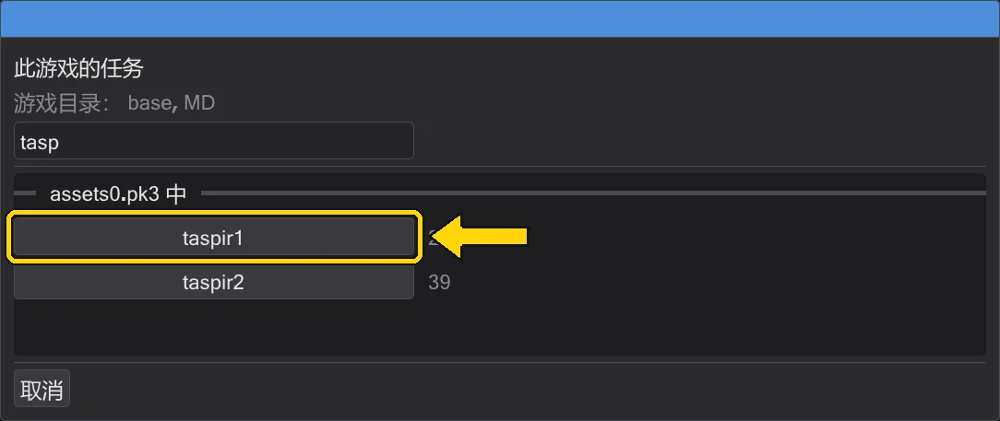
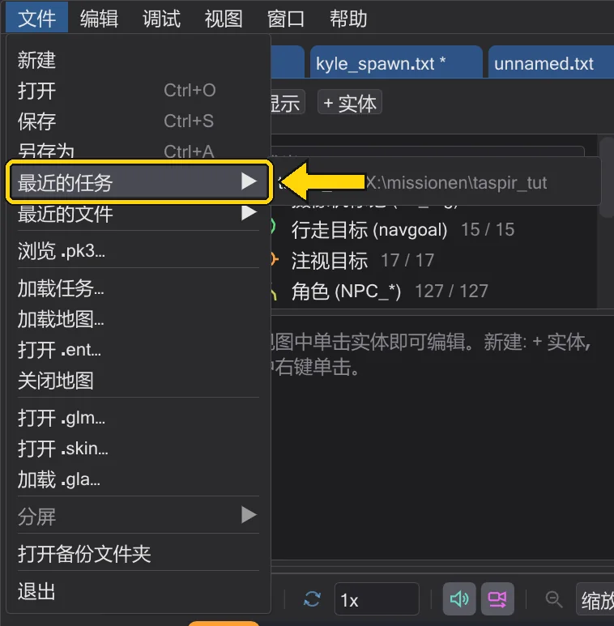
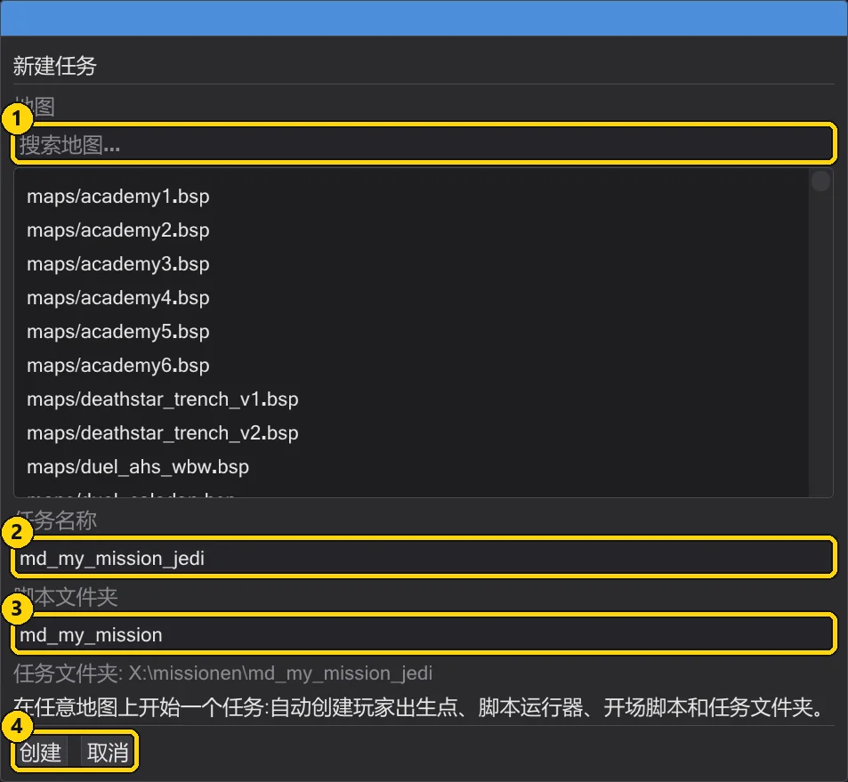
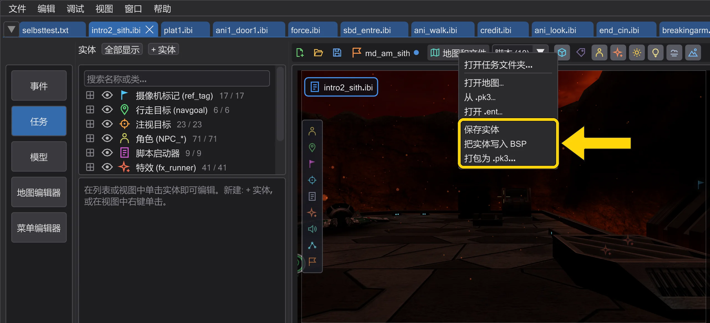
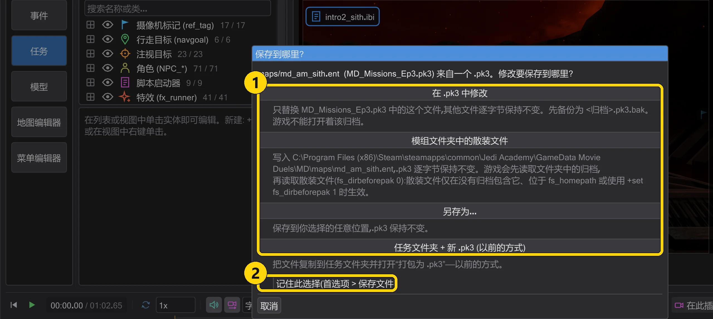
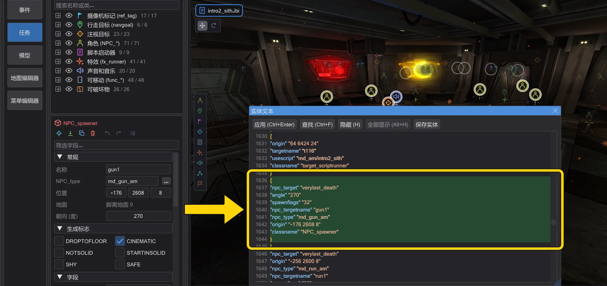
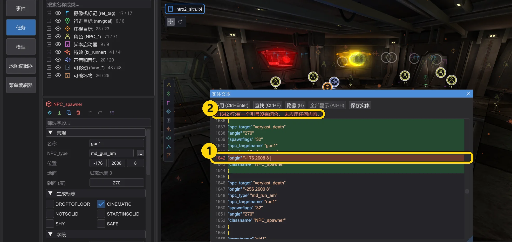
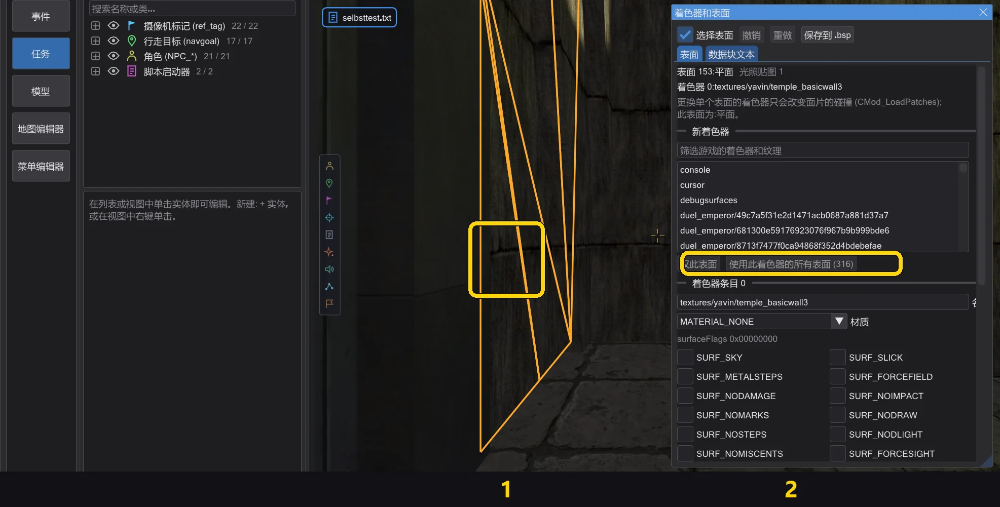
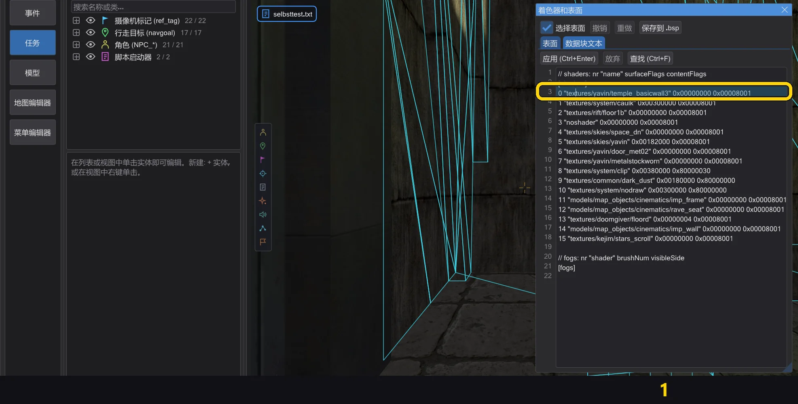
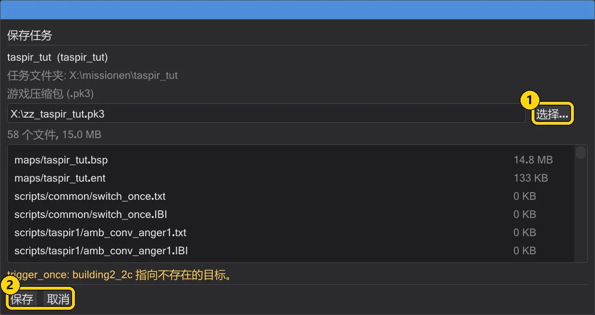

任务
任务就是一张地图及其实体和全部脚本。可以完整打开任务、创建自己的任务,并打包成游戏可加载的 .pk3。
打开任务#
加载任务…(文件 菜单或地图工具栏)选择一个 .pk3,并列出该游戏的全部任务——游戏目录中所有压缩包里带脚本的地图,与游戏查找它们的方式完全相同(同名文件以胜出的压缩包为准)。选择该游戏的哪个压缩包都无所谓:原版 Jedi Academy 的 assets1.pk3 与 assets0.pk3 一样会列出 t1_sour、kor1、yavin1……所选压缩包中的任务排在最上方,其余任务读取完毕后列在下面(地图在后台读取——列表上方的一行显示进度)。筛选框可按名称缩小列表。选择一个,一切就绪:地图、包含任务角色的 .ent,以及任务的每个脚本各占一个标签页。所有标签页共享地图和摄像机。

标签页按游戏启动脚本的顺序打开。为此 JK Studio 像引擎一样从地图加载的那一刻起运行地图:实体的 spawnscript、worldspawn 的 spawnscript、trigger_always、没有 targetname 的 NPC 生成器、玩家进入游戏时出生点的目标——以及由此经 run、use、中继、计数器、生成器和带 deathscript 的 kill 引发的一切。第一个脚本的标签页在最前。只有玩家才会触发的脚本(走进的触发器、战斗)排在最后,按实体的顺序。
使用哪些游戏目录由压缩包决定:如果它位于你的某个游戏目录中(编辑 → 游戏目录),就使用这些目录。如果它属于另一个安装——该安装的 base,或 base 旁边的模组目录——JK Studio 仅在本次会话中按引擎的顺序(先 base,再模组)使用该安装的目录,不会混入你配置的目录。其他任意目录中的 .pk3 会排在你的游戏目录之后,同样仅限本次会话。不会保存任何内容:游戏目录窗口会显示本次会话的目录,并提供返回你自己目录的按钮(使用已配置的游戏目录)。每个任务标签页都保留其游戏的目录:一个标签页中是 Jedi Outcast 任务、另一个中是 Jedi Academy 任务时,切换标签页也会随之切换游戏目录和规则集。
最近的任务#
文件 → 最近的任务 和起始页面列出最近打开的任务——无论来自压缩包还是任务文件夹。单击即可重新打开整个项目:地图、实体和所有脚本。文件已不存在的条目会从列表中移除。

新建任务#
新建任务 可在任意地图上开始一个任务。选择地图,为任务命名(字母、数字和 _;游戏以 maps/<名称>.bsp 加载,即 devmap <名称>),并指定脚本文件夹。JK Studio 会创建玩家出生点、脚本启动器、开场脚本,以及位于 文档\behaved\missions 下的任务文件夹。玩家出生时开场脚本开始运行。

从未打包的任务保存在其文件夹中;重启后可用 打开任务文件夹 继续。
在打开的位置保存文件#
每个打开的文件都会记住它的来源:磁盘上的散装文件,或某个 .pk3 及其中的条目。散装的 .bsp、.ent 或脚本会不经询问保存回原路径——不会在“文档”下复制,也不会生成新的 .pk3。
- 保存(Ctrl+S)保存当前标签页的脚本,每个标签页单独保存。
- 保存实体 把实体以
.ent写入其打开的位置,否则写在.bsp旁边。游戏会优先使用地图旁边的.ent,而不是.bsp内的实体。 - 把实体写入 BSP 把实体写入
.bsp本身——与地图编辑器的-onlyents生成的结果逐字节相同:几何、光照贴图和光照网格保持不变。覆盖前旧文件保存为<地图>.bsp.bak。 - 保存任务 把任务的每个文件保存在其原位置。打包为 .pk3(地图和文件 菜单)只在你需要时才把任务打包成
.pk3。

来自 .pk3。 来自归档的文件会询问修改保存到哪里。勾选 记住此选择(首选项 > 保存文件) 可保留选择;之后可在 首选项 → 保存文件 中更改。

.pk3 的文件的询问(此处为 md_am_sith 的实体)。| 编号 | 名称 | 作用 |
|---|---|---|
| 1 | 在 .pk3 中修改 | 只替换这个条目,其他条目逐字节复制,不重新压缩。备份为 <归档>.pk3.bak。如果游戏打开着该归档,会显示提示,且不做任何改动。 |
| 2 | 模组文件夹中的散装文件 | 把文件写入模组文件夹的 maps/ 或 scripts/,.pk3 逐字节保持不变。 |
| 3 | 另存为 | 你选择的任意位置。 |
| 4 | 任务文件夹 + 新 .pk3 (以前的方式) | 以前的方式:复制到任务文件夹,然后打包新的 .pk3。 |
fs_dirbeforepak 0)。同一模组文件夹中的散装文件只在没有归档包含它、位于 fs_homepath 或使用 +set fs_dirbeforepak 1 时生效。每次保存都先写入目标旁边的临时文件,全部写完后才重命名——任何一步失败,旧文件保持不变,也不会显示“已保存”。首选项 → 保存文件:来自 .pk3 的文件的保存方式、以前的任务文件夹流程(像以前一样复制到任务文件夹并生成新的 .pk3)以及 新脚本使用 BehavEd 模板(关闭:新脚本为空)。
以文本编辑实体#
窗口 → 实体文本 以 .ent 格式把整个实体列表显示为文本,带行号,并为键和值着色。点击某个块会在 3D 视图中选中该实体;在 3D 中选中实体时,文本会跳到它的块,并从 { 到 } 高亮显示。

{ 到 } 高亮显示(md_am_sith)。- 应用 (Ctrl+Enter) 完全像游戏一样读取文本(注释
//和/* */、不带引号的单词),并在一个撤销步骤中替换实体。如果有问题——缺少}或引号、一个实体中超过 64 个键或 2048 个字符、第一个实体不是 worldspawn——会有提示指出行号,该行变红,并且不应用任何内容。 - 含有
origin、angle、angles、modelscale、modelscale_vec、light和_color的行在输入时就会生效:只改变该实体,整个输入过程是一个撤销步骤。 - 文本保持你写的样子:保存实体 会连同顺序、空行和注释一起保存。在检查器中或用 Gizmo 修改时,只会重写受影响的那一行;缺少的键会单独占一行。

| 编号 | 名称 | 作用 |
|---|---|---|
| 1 | Ctrl+Enter | 应用文本。 |
| 2 | Ctrl+F | 查找:所有匹配都会高亮;F3 下一个,Shift+F3 上一个,Esc 取消高亮。 |
| 3 | Ctrl+H | 查找和替换。 |
| 4 | H | 在 3D 视图中隐藏所选实体——在面板中文本框以外,以及在地图上方。 |
| 5 | Alt+H | 重新显示所有实体。 |
| 6 | 中键单击 | 在 3D 视图中单击中键:把鼠标下那一点的 x y z 插入到文本光标处(与 BSP-Entity-Edit 相同)。按住中键拖动仍然移动视图。 |
游戏文件夹中的文件按游戏的方式读取:后面的文件夹优先,在同一文件夹内,.pk3 先于散装文件(fs_dirbeforepak 0)。如果你用 +set fs_dirbeforepak 1 启动游戏,请在首选项的游戏文件夹下打开 同一文件夹中的散装文件优先于 .pk3 (fs_dirbeforepak 1)。
更改已编译地图的着色器和标志#
窗口 → 着色器和表面 可在不重新编译的情况下编辑已打开 .bsp 的着色器、雾和表面:几何、光照贴图、光照网格、可见性和实体逐字节保持不变。在地图编辑器中,该窗口作用于用 File → Open .bsp... 打开的地图;勾选 按游戏中的样子显示编辑后的地图 可在摄像机中查看编辑后的地图。

- 单击: 打开 选择表面 后,在 3D 视图中左键单击即可选择表面。表面 标签页显示其类型、光照贴图、着色器和雾。从游戏的着色器和纹理中选择新着色器,应用于 仅此表面 或所有使用相同着色器的表面;新着色器会追加到着色器数据块,并保留旧着色器的标志。
- 标志: 材质、surfaceFlags 和 contentFlags 以复选框显示,名称与游戏的
surfaceflags.h相同(Jedi Academy、Movie Duels 和 Jedi Outcast 使用相同的位;Movie Duels 把材质 31 称为 MATERIAL_LAVA)。窗口会显示有多少画刷、画刷面和面片使用该着色器——游戏只从画刷和面片读取内容,碰撞也只在那里改变。 - 文本: 数据块文本 标签页每个着色器一行(
nr "name" surfaceFlags contentFlags),每团雾一行(nr "shader" brushNum visibleSide)。修改名称或标志,为新着色器添加一行下一个编号,然后按 Ctrl+Enter。点击某一行会在 3D 中高亮其表面。 - 两种方式修改的是同一份文档;每次应用都是一个撤销步骤(窗口有焦点时按 Ctrl+Z)。保存到 .bsp 按实体中熟悉的方式写入
.bsp:散装文件并备份为.bak,来自.pk3时写入归档,散装写入模组文件夹,或任意位置。

$lightmap 阶段的着色器在游戏中不显示光照贴图;在没有光照贴图的表面上,带有该阶段的着色器会得到白色图像。保存任务#
打包为 .pk3 会显示将放入压缩包的内容——每个文件及其大小——并先检查任务:实体使用了但不存在的脚本、无法编译的脚本、缺少玩家出生点、指向不存在目标的引用、缺少 ENDMARKER 的 .str、离开游戏文件夹的路径、键或字符数超过游戏上限的实体。错误(红色)必须修正,警告(橙色)可以保留。保存 编译脚本、加入你自己的 ROFF 文件,并把 .pk3 打包到游戏文件夹;新任务还会把脚本、.ent 和 .IBI 放进其任务文件夹。

| 编号 | 名称 | 作用 |
|---|---|---|
| 1 | 游戏压缩包 (.pk3) | .pk3 的写入位置;选择 可选择其他位置。 |
| 2 | 保存 / 取消 | 保存、编译并打包——或关闭窗口。上方:包中的每个文件和检查结果。 |
zz_<name>.pk3,从而优先于较旧的文件。启动游戏,在控制台输入 devmap <name> 即可试玩。